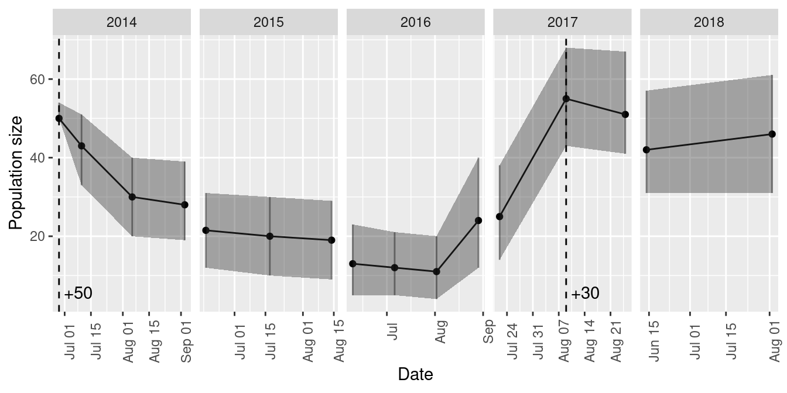
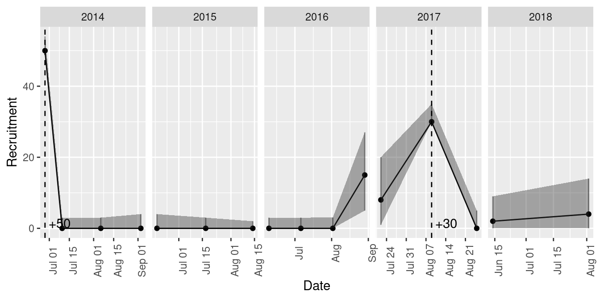

An introduction to mrmr
intro-to-mrmr.RmdThe mrmr package is designed to simplify and expedite mark recapture data processing, parameter estimation, and visualization for a narrow class of mark recapture data (namely, those collected by the Sierra Nevada Amphibian Research Group).
Workflow overview
The typical workflow involves three steps:
- Cleaning mark recapture data with
mrmr::clean_data() - Fitting a mark recapture model with
mrmr::fit_model() - Visualizing results with
mrmr::plot_model()
Data specifications
The package comes with example data that illustrate the expected format. Three files are needed.
The first file specifies capture data:
library(dplyr)
#>
#> Attaching package: 'dplyr'
#> The following objects are masked from 'package:stats':
#>
#> filter, lag
#> The following objects are masked from 'package:base':
#>
#> intersect, setdiff, setequal, union
library(readr)
library(tibble)
library(rstan)
#> Loading required package: ggplot2
#> Registered S3 methods overwritten by 'ggplot2':
#> method from
#> [.quosures rlang
#> c.quosures rlang
#> print.quosures rlang
#> Loading required package: StanHeaders
#> rstan (Version 2.18.2, GitRev: 2e1f913d3ca3)
#> For execution on a local, multicore CPU with excess RAM we recommend calling
#> options(mc.cores = parallel::detectCores()).
#> To avoid recompilation of unchanged Stan programs, we recommend calling
#> rstan_options(auto_write = TRUE)
library(mrmr)capture_filepath <- system.file("extdata",
"capture-example.csv",
package = "mrmr")
read_csv(capture_filepath) %>%
glimpse
#> Parsed with column specification:
#> cols(
#> swab_id = col_character(),
#> pit_tag_id = col_double(),
#> site_id = col_double(),
#> survey_date = col_date(format = ""),
#> surveyor1 = col_character(),
#> pit_tag_status = col_character(),
#> frog_sex = col_character(),
#> frog_state = col_character(),
#> frog_weight = col_double(),
#> frog_svl = col_double(),
#> swabber_name = col_character(),
#> treatment = col_character(),
#> collection_date = col_date(format = ""),
#> collection_location = col_double(),
#> release_location = col_double(),
#> release_date = col_date(format = ""),
#> standard_type = col_character(),
#> load = col_double(),
#> category = col_character()
#> )
#> Observations: 466
#> Variables: 19
#> $ swab_id <chr> NA, NA, NA, NA, NA, NA, NA, NA, NA, NA, NA, …
#> $ pit_tag_id <dbl> 9.00043e+14, 9.00043e+14, 9.00043e+14, 9.000…
#> $ site_id <dbl> 70449, 70449, 70449, 70449, 70449, 70449, 70…
#> $ survey_date <date> 2014-08-07, 2015-08-16, 2014-07-11, 2015-08…
#> $ surveyor1 <chr> "Killion", "Killion", "Demaranville", "Linda…
#> $ pit_tag_status <chr> NA, NA, NA, NA, NA, NA, NA, NA, NA, NA, NA, …
#> $ frog_sex <chr> "M", "F", "M", "M", "F", "F", "M", "M", "F",…
#> $ frog_state <chr> "Healthy", "Healthy", "Healthy", "Healthy", …
#> $ frog_weight <dbl> NA, NA, NA, NA, NA, NA, NA, NA, NA, NA, NA, …
#> $ frog_svl <dbl> NA, NA, NA, NA, NA, NA, NA, NA, NA, NA, NA, …
#> $ swabber_name <chr> NA, NA, NA, NA, NA, NA, NA, NA, NA, NA, NA, …
#> $ treatment <chr> "unexposed", "exposed", "unexposed", "unexpo…
#> $ collection_date <date> 2014-06-27, 2014-06-23, 2014-06-27, 2014-06…
#> $ collection_location <dbl> 72996, 72996, 72996, 72996, 72996, 72996, 72…
#> $ release_location <dbl> 70449, 70449, 70449, 70449, 70449, 70449, 70…
#> $ release_date <date> 2014-06-28, 2014-06-28, 2014-06-28, 2014-06…
#> $ standard_type <chr> NA, NA, NA, NA, NA, NA, NA, NA, NA, NA, NA, …
#> $ load <dbl> NA, NA, NA, NA, NA, NA, NA, NA, NA, NA, NA, …
#> $ category <chr> "translocated", "translocated", "translocate…Note that the system.file function generates a path to the capture-example.csv file, but in a real application, you would likely use a path to a local file (real data, not the example data included in the package). The files must be formatted with the same columns and conventions uesd in the example data. Each row in this file represents a capture or recapture event.
The second file specifies translocation data:
translocation_filepath <- system.file("extdata",
"translocation-example.csv",
package = "mrmr")
read_csv(translocation_filepath) %>%
glimpse
#> Parsed with column specification:
#> cols(
#> swab_id = col_character(),
#> pit_tag_id = col_double(),
#> treatment = col_character(),
#> release_date = col_date(format = ""),
#> swabbing_date = col_date(format = ""),
#> pit_tag_status = col_character(),
#> frog_sex = col_character(),
#> frog_state = col_character(),
#> frog_location = col_character(),
#> frog_weight = col_double(),
#> frog_svl = col_double(),
#> swabber_name = col_character(),
#> frog_comments = col_character(),
#> quant_cycle = col_double(),
#> start_quant = col_double(),
#> standard_type = col_character(),
#> load = col_double()
#> )
#> Observations: 80
#> Variables: 17
#> $ swab_id <chr> "RKS16752", "RKS16755", "RKS16756", "RKS16757", "…
#> $ pit_tag_id <dbl> 9.00043e+14, 9.00043e+14, 9.00043e+14, 9.00043e+1…
#> $ treatment <chr> "exposed", "exposed", "exposed", "exposed", "expo…
#> $ release_date <date> 2014-06-28, 2014-06-28, 2014-06-28, 2014-06-28, …
#> $ swabbing_date <date> 2014-06-23, 2014-06-23, 2014-06-23, 2014-06-23, …
#> $ pit_tag_status <chr> "Y", "Y", "Y", "Y", "Y", "Y", "Y", "Y", "Y", "Y",…
#> $ frog_sex <chr> "F", "F", "M", "M", "M", "F", "F", "F", "M", "F",…
#> $ frog_state <chr> "Healthy", "Healthy", "Healthy", "Healthy", "Heal…
#> $ frog_location <chr> "in lake", "in lake", "in lake", "in lake", "in l…
#> $ frog_weight <dbl> 11, 13, 12, 10, 10, 10, 11, 13, 13, 11, 10, 11, 1…
#> $ frog_svl <dbl> 46, 51, 44, 42, 44, 40, 45, 48, 49, 47, 48, 47, 4…
#> $ swabber_name <chr> "Kauffman", "Kauffman", "Kauffman", "Kauffman", "…
#> $ frog_comments <chr> "Treated, for translocation to 70449.", "Treated,…
#> $ quant_cycle <dbl> 35.72, 26.40, 28.51, 34.27, 36.12, 28.55, 31.44, …
#> $ start_quant <dbl> 0.09, 51.65, 12.33, 0.25, 0.07, 12.03, 1.68, 26.7…
#> $ standard_type <chr> "genomic", "genomic", "genomic", "genomic", "geno…
#> $ load <dbl> 432, 247920, 59184, 1200, 336, 57744, 8064, 12835…Each row corresponds to a translocation event of one unique individual.
The third file specifies survey-level data:
survey_filepath <- system.file("extdata",
"survey-example.csv",
package = "mrmr")
read_csv(survey_filepath) %>%
glimpse
#> Parsed with column specification:
#> cols(
#> survey_date = col_date(format = ""),
#> site_id = col_double(),
#> survey_duration = col_double(),
#> primary_period = col_double(),
#> secondary_period = col_double(),
#> people = col_double(),
#> person_hours = col_double()
#> )
#> Observations: 63
#> Variables: 7
#> $ survey_date <date> 2014-06-28, 2014-07-10, 2014-07-11, 2014-07-12…
#> $ site_id <dbl> 70449, 70449, 70449, 70449, 70449, 70449, 70449…
#> $ survey_duration <dbl> NA, 7.61, 7.00, 5.35, 7.33, 7.58, 8.16, 7.58, 7…
#> $ primary_period <dbl> 1, 2, 2, 2, 3, 3, 3, 4, 4, 4, 5, 5, 5, 5, 6, 6,…
#> $ secondary_period <dbl> 1, 1, 2, 3, 1, 2, 3, 1, 2, 3, 1, 1, 2, 3, 1, 2,…
#> $ people <dbl> 0, 1, 1, 1, 1, 1, 1, 1, 1, 1, 1, 5, 5, 5, 2, 2,…
#> $ person_hours <dbl> NA, 7.61, 7.00, 5.35, 7.33, 7.58, 8.16, 7.58, 7…Here, each row is a unique survey.
Data processing
To load and process the data, provide paths to the data files as arguments to the mrmr::clean_data() function:
data <- clean_data(captures = capture_filepath,
translocations = translocation_filepath,
surveys = survey_filepath)
glimpse(data)
#> List of 4
#> $ stan_d :List of 13
#> ..$ M : num 336
#> ..$ T : num 17
#> ..$ maxJ : num 7
#> ..$ J : Named num [1:17] 0 0 3 3 3 3 3 3 5 7 ...
#> .. ..- attr(*, "names")= chr [1:17] "n_sec_periods1" "n_sec_periods2" "n_sec_periods3" "n_sec_periods4" ...
#> ..$ Jtot : num 49
#> ..$ Y : num [1:336, 1:17, 1:7] 0 0 0 0 0 0 0 0 0 0 ...
#> .. ..- attr(*, "dimnames")=List of 3
#> ..$ introduced : logi [1:336] TRUE TRUE TRUE TRUE TRUE TRUE ...
#> ..$ t_intro : num [1:336] 2 2 2 2 2 2 2 2 2 2 ...
#> ..$ X_detect : num [1:49, 1] 1 1 1 1 1 1 1 1 1 1 ...
#> .. ..- attr(*, "dimnames")=List of 2
#> .. ..- attr(*, "assign")= int 0
#> ..$ m_detect : int 1
#> ..$ j_idx : num [1:17, 1:7] 0 0 1 4 7 10 13 16 19 24 ...
#> .. ..- attr(*, "dimnames")=List of 2
#> ..$ any_surveys: Named num [1:17] 0 0 1 1 1 1 1 1 1 1 ...
#> .. ..- attr(*, "names")= chr [1:17] "n_sec_periods1" "n_sec_periods2" "n_sec_periods3" "n_sec_periods4" ...
#> ..$ prim_idx : int [1:49] 3 3 3 4 4 4 5 5 5 6 ...
#> $ captures :Classes 'spec_tbl_df', 'tbl_df', 'tbl' and 'data.frame': 466 obs. of 19 variables:
#> ..$ swab_id : chr [1:466] NA NA NA NA ...
#> ..$ pit_tag_id : num [1:466] 9e+14 9e+14 9e+14 9e+14 9e+14 ...
#> ..$ site_id : num [1:466] 70449 70449 70449 70449 70449 ...
#> ..$ survey_date : Date[1:466], format: "2014-08-07" ...
#> ..$ surveyor1 : chr [1:466] "Killion" "Killion" "Demaranville" "Lindauer" ...
#> ..$ pit_tag_status : chr [1:466] NA NA NA NA ...
#> ..$ frog_sex : chr [1:466] "M" "F" "M" "M" ...
#> ..$ frog_state : chr [1:466] "Healthy" "Healthy" "Healthy" "Healthy" ...
#> ..$ frog_weight : num [1:466] NA NA NA NA NA NA NA NA NA NA ...
#> ..$ frog_svl : num [1:466] NA NA NA NA NA NA NA NA NA NA ...
#> ..$ swabber_name : chr [1:466] NA NA NA NA ...
#> ..$ treatment : chr [1:466] "unexposed" "exposed" "unexposed" "unexposed" ...
#> ..$ collection_date : Date[1:466], format: "2014-06-27" ...
#> ..$ collection_location: num [1:466] 72996 72996 72996 72996 72996 ...
#> ..$ release_location : num [1:466] 70449 70449 70449 70449 70449 ...
#> ..$ release_date : Date[1:466], format: "2014-06-28" ...
#> ..$ standard_type : chr [1:466] NA NA NA NA ...
#> ..$ load : num [1:466] NA NA NA NA NA NA NA NA NA NA ...
#> ..$ category : chr [1:466] "translocated" "translocated" "translocated" "translocated" ...
#> ..- attr(*, "spec")=
#> .. .. cols(
#> .. .. swab_id = col_character(),
#> .. .. pit_tag_id = col_double(),
#> .. .. site_id = col_double(),
#> .. .. survey_date = col_date(format = ""),
#> .. .. surveyor1 = col_character(),
#> .. .. pit_tag_status = col_character(),
#> .. .. frog_sex = col_character(),
#> .. .. frog_state = col_character(),
#> .. .. frog_weight = col_double(),
#> .. .. frog_svl = col_double(),
#> .. .. swabber_name = col_character(),
#> .. .. treatment = col_character(),
#> .. .. collection_date = col_date(format = ""),
#> .. .. collection_location = col_double(),
#> .. .. release_location = col_double(),
#> .. .. release_date = col_date(format = ""),
#> .. .. standard_type = col_character(),
#> .. .. load = col_double(),
#> .. .. category = col_character()
#> .. .. )
#> $ translocations:Classes 'spec_tbl_df', 'tbl_df', 'tbl' and 'data.frame': 80 obs. of 24 variables:
#> ..$ swab_id : chr [1:80] "RKS16752" "RKS16755" "RKS16756" "RKS16757" ...
#> ..$ pit_tag_id : chr [1:80] "900043000104512" "900043000104531" "900043000104540" "900043000104552" ...
#> ..$ treatment : chr [1:80] "exposed" "exposed" "exposed" "exposed" ...
#> ..$ release_date : Date[1:80], format: "2014-06-28" ...
#> ..$ swabbing_date : Date[1:80], format: "2014-06-23" ...
#> ..$ pit_tag_status : chr [1:80] "Y" "Y" "Y" "Y" ...
#> ..$ frog_sex : chr [1:80] "F" "F" "M" "M" ...
#> ..$ frog_state : chr [1:80] "Healthy" "Healthy" "Healthy" "Healthy" ...
#> ..$ frog_location : chr [1:80] "in lake" "in lake" "in lake" "in lake" ...
#> ..$ frog_weight : num [1:80] 11 13 12 10 10 10 11 13 13 11 ...
#> ..$ frog_svl : num [1:80] 46 51 44 42 44 40 45 48 49 47 ...
#> ..$ swabber_name : chr [1:80] "Kauffman" "Kauffman" "Kauffman" "Kauffman" ...
#> ..$ frog_comments : chr [1:80] "Treated, for translocation to 70449." "Treated, for translocation to 70449" "Treated, for translocation to 70449" "Treated, for translocation to 70449" ...
#> ..$ quant_cycle : num [1:80] 35.7 26.4 28.5 34.3 36.1 ...
#> ..$ start_quant : num [1:80] 0.09 51.65 12.33 0.25 0.07 ...
#> ..$ standard_type : chr [1:80] "genomic" "genomic" "genomic" "genomic" ...
#> ..$ load : num [1:80] 432 247920 59184 1200 336 ...
#> ..$ survey_date : Date[1:80], format: "2014-06-28" ...
#> ..$ primary_period : num [1:80] 2 2 2 2 2 2 2 2 2 2 ...
#> ..$ secondary_period: num [1:80] 0 0 0 0 0 0 0 0 0 0 ...
#> ..$ duration : num [1:80] NA NA NA NA NA NA NA NA NA NA ...
#> ..$ person_hours : num [1:80] NA NA NA NA NA NA NA NA NA NA ...
#> ..$ year : num [1:80] 2014 2014 2014 2014 2014 ...
#> ..$ is_overwinter : logi [1:80] FALSE FALSE FALSE FALSE FALSE FALSE ...
#> $ surveys :Classes 'tbl_df', 'tbl' and 'data.frame': 52 obs. of 7 variables:
#> ..$ primary_period : num [1:52] 1 2 3 3 3 4 4 4 5 5 ...
#> ..$ secondary_period: num [1:52] 0 0 1 2 3 1 2 3 1 2 ...
#> ..$ survey_date : Date[1:52], format: "2014-06-14" ...
#> ..$ duration : num [1:52] NA NA 7.61 7 5.35 7.33 7.58 8.16 7.58 7.85 ...
#> ..$ person_hours : num [1:52] NA NA 7.61 7 5.35 7.33 7.58 8.16 7.58 7.85 ...
#> ..$ year : num [1:52] 2014 2014 2014 2014 2014 ...
#> ..$ is_overwinter : logi [1:52] FALSE FALSE FALSE FALSE FALSE FALSE ...Note the output provides data frames as list elements, and a list element called stan_d, which contains data that has been pre-processed for model fitting.
Model fitting
To fit a mark-recapture model, use mrmr::fit_model(). This model accounts for known introductions into the population, and has random effects to account for variation in survival and recruitment through time.
Built-in visualizations
Time series of abundance, recruitment, and survival of introduced cohorts are available through the mrmr::plot_model() function.

